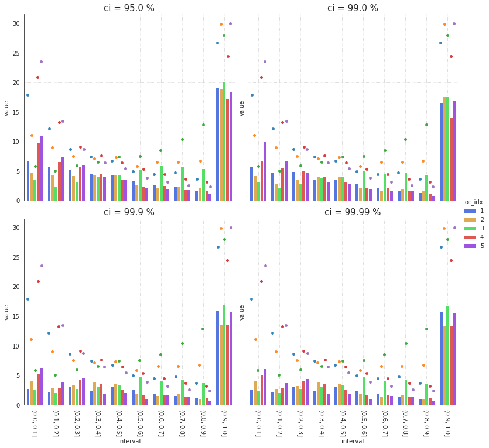

Aug ??st, 2021 (play boot)¶
Motivation: SVINET
# HIDE CODE
import os
import sys
import nibabel as nib
import networkx as nx
from time import time
from pprint import pprint
from copy import deepcopy as dc
from os.path import join as pjoin
from myterial import orange, blue_grey
from IPython.display import display, IFrame, HTML
from matplotlib.colors import rgb2hex, to_rgb
import matplotlib.pyplot as plt
import seaborn as sns
# set style & no interpolalation
import matplotlib
matplotlib.rcParams['image.interpolation'] = 'none'
sns.set_style('whitegrid')
# tmp & extras dir
git_dir = pjoin(os.environ['HOME'], 'Dropbox/git')
tmp_dir = pjoin(git_dir, 'jb-Ca-fMRI/tmp')
extras_dir = pjoin(git_dir, 'jb-Ca-fMRI/_extras')
# GitHub
sys.path.insert(0, pjoin(git_dir, '_Ca-fMRI'))
from register.atlas import load_allen, make_tree_graph
from register.parcellation import Parcellation
from analysis.hierarchical import Hierarchical
from analysis.svinet import *
from utils.plotting import *
from utils.render import *
from model.mouse import Mice
from model.configuration import Config
# warnings
import warnings
warnings.filterwarnings('ignore', category=DeprecationWarning)
Mice¶
svinet_props = {
'task': 'rest',
'mode': 'bold',
'metric': 'pearson',
'match_metric': 'cosine',
'graph_type': 'real',
}
mice = Mice(Config(128))
mice.combine_dfs(svinet_props.get('task', 'rest'), full=True)
k = 6
p = 20
figs_dir = [
mice.cfg.results_dir,
'SVINET',
'figs_combined',
'-'.join([
f"{svinet_props.get('graph_type', 'real')}",
f"p{p}",
f"k{k}",
]),
]
figs_dir = pjoin(*figs_dir)
os.makedirs(figs_dir, exist_ok=True)
print(figs_dir)
/home/hadi/Documents/Ca-fMRI/processed/norm-global_parcel-spatial-sym_n-128/results/SVINET/fi gs_combined/real-p20-k6
Align loaded fits using svinet.gam¶
svinet = SVINET(mice, k, p, 'sub-SLC')
result = align_svinet_group(mice, k=k, p=p, **svinet_props)
list(result)
current expt: 'p20'
['perms', 'gam', 'pi', 'gamma_all', 'svinet_all']
fig, axes = create_figure(1, k, (13.5, 4) if k == 7 else (12, 6))
gam_arr = svinet.pi2arr(result['pi'], cortex_only=True)
for ax, idx in zip(axes.ravel(), range(1, k + 1)):
im = ax.imshow(gam_arr[idx], cmap='rocket', vmin=0)
ax.set_title(f"oc_{idx}")
remove_ticks(axes)
plt.show()

fig, axes = create_figure(1, 2, (10, 7))
d = sp_dist.pdist(result['pi'].T, metric='cosine')
d = sp_dist.squareform(d)
im = axes[0].imshow(dist2sim(d))
axes[1].imshow(svinet.adjacencies[20].astype(bool))
remove_ticks(axes)
plt.show()

fix_idx = np.concatenate([
np.array(list(v.values())).reshape(1, -1)
for v in result['perms'].values()
])
ctr = {}
for i in range(k):
ctr[i] = collections.Counter(fix_idx[:, i]).most_common()
ctr
{ 0: [(0, 20), (4, 4), (3, 3), (5, 2), (1, 1)], 1: [(1, 25), (0, 5)], 2: [(2, 30)], 3: [(3, 15), (5, 8), (1, 3), (4, 2), (0, 2)], 4: [(4, 22), (5, 6), (1, 1), (3, 1)], 5: [(5, 14), (3, 11), (0, 3), (4, 2)] }
### Run below to see if they are aligned goodly
nrows = len(result['gamma_all'])
fig, axes = create_figure(nrows, k, (13, 2.4 * nrows))
for i, (key, gam) in tqdm(enumerate(result['gamma_all'].items()), total=nrows):
gam_arr = svinet.pi2arr(gam, cortex_only=True)
for j, idx in enumerate(range(1, k + 1)):
im = axes[i, j].imshow(gam_arr[idx], cmap='rocket', vmin=0)
# plt.colorbar(im, ax=axes[i, j], shrink=0.5)
if i == 0:
axes[i, j].set_title(f"oc_{idx}\n")
if j == 0:
axes[i, j].set_ylabel(f"{key}\n")
remove_ticks(axes)
plt.show()

BOOTSTRAP¶
import re
def _extract_seed(x):
x = next(e for e in str(x).split('-') if 'seed' in e)
x = re.sub(r"\D", "", x)
return int(x)
# find shared seeds
seeds_shared = set(range(1, 1000 + 1))
for sub in mice.cfg.sub_ids:
data_ses = []
for ses in mice.cfg.ses_ids:
key = mice.get_key(sub, ses)
df = result['svinet_all'][key].pi_cut_df
s = list(map(_extract_seed, df['run']))
seeds_shared.intersection_update(set(s))
len(seeds_shared)
835
intervals = None
data_all = []
for sub in tqdm(mice.cfg.sub_ids):
data_ses = []
for ses in mice.cfg.ses_ids:
key = mice.get_key(sub, ses)
df = result['svinet_all'][key].pi_cut_df.copy()
if intervals is None:
intervals = df.interval.unique()
df = pd.concat([pd.DataFrame(columns=['seed']), df], axis=1)
df['seed'] = list(map(_extract_seed, df['run']))
df = df.loc[df['seed'].isin(seeds_shared)]
df = df.set_index([df['seed'], df['oc_idx'], df['interval']])
df = df.drop(columns=['run', 'seed', 'oc_idx', 'interval', 'count'])
data = df.unstack().values
data = data.reshape((len(seeds_shared), k, len(intervals)))
data_ses.append(np.expand_dims(data, axis=0))
data_ses = np.concatenate(data_ses)
data_all.append(np.expand_dims(data_ses, axis=0))
data_all = np.concatenate(data_all)
data_all.shape
(10, 3, 835, 6, 10)
props = {
'boxprops': {'alpha': 0.5, 'edgecolor': 'k'},
'medianprops': {'color': 'k'},
'whiskerprops': {'color': 'k'},
'capprops': {'color': 'k', 'linewidth': 1},
'flierprops': {'alpha': 0.5, 'zorder': 1},
}
meanprops = {
"marker": "o",
"markerfacecolor": "bisque",
"markeredgecolor": "k",
"markersize": "6",
}
whisk = {
5.0: [2.5, 97.5],
1.0: [0.5, 99.5],
0.1: [0.05, 99.95],
0.01: [0.005, 99.995],
}
figs = []
sups = []
for ci, whisk_val in whisk.items():
nrows = 2
ncols = len(intervals)
fig, axes = create_figure(nrows, ncols, (4 * ncols, 3.8 * nrows), 'ticks', 'col', False)
for j, intvl in enumerate(intervals):
dlist = []
for i in range(k):
dlist.append({
'interval': [intervals[j]] * 10 * n_boot,
'oc_idx': [i + 1] * 10 * n_boot,
'mean': booted[..., i, j].ravel(),
})
_df = pd.DataFrame(merge_dicts(dlist))
sns.kdeplot(
data=_df,
x='mean',
hue='oc_idx',
fill=True,
alpha=0.05,
lw=2,
palette=svinet.colors,
ax=axes[0, j],
)
axes[0, j].set_title(f"bin: {intvl}\n", fontsize=15)
sns.boxplot(
data=_df,
x='mean',
y='oc_idx',
palette=svinet.colors,
dodge=True,
orient='h',
width=0.6,
whis=whisk_val,
# fliersize=1,
showfliers=False,
showmeans=True,
meanprops=meanprops,
ax=axes[1, j],
**props,
)
for i in range(2):
axes[i, j].grid(axis='both', ls=':')
axes[i, j].axvline(0, color='dimgrey', lw=0.8, ls='--')
if j == 0:
axes[0, j].set_ylabel('kde (mice)\n', fontsize=15)
axes[1, j].set_ylabel('box (mice)\n', fontsize=15)
else:
for i in range(2):
axes[i, j].set_ylabel('')
msg = f"Whiskers at {ci} % confidence interval: {whisk_val}"
sup = fig.suptitle(msg, fontsize=20, y=1.07)
figs.append(fig)
sups.append(sup)
plt.close()
save_file = pjoin(figs_dir, f"kde-box-group_seeds-{'avg' if avg_seeds else 'single'}_bins{len(intervals)}-boot{n_boot:1.0e}.pdf")
print(save_file)
save_fig(
fig=figs,
sup=sups,
save_file=save_file,
display=False,
multi=True,
)
print('done.')
n_boot = int(1e5)
booted = bootstrap(
data=data_all,
n_boot=n_boot,
avg_seeds=True,
)
booted.shape
(1000000, 5, 10)
ci = [99.99, 99.9, 99.0, 95.0]
percentiles = [(100 - c) / 2 for c in ci]
percentiles += [50] + [100 - e for e in percentiles[::-1]]
percentiles = [np.round(e, 3) for e in percentiles]
val = np.percentile(
a=booted,
q=percentiles,
axis=0,
)
dlist = []
for i in range(k):
for j, intvl in enumerate(intervals):
_base = {
'interval': [intvl] * len(ci),
'oc_idx': [i + 1] * len(ci),
'ci': ci,
}
dlist.append({
'label': ['lower'] * len(ci),
'value': val[:4, i, j],
**_base,
})
dlist.append({
'label': ['median'] * len(ci),
'value': [val[4, i, j]] * len(ci),
**_base,
})
dlist.append({
'label': ['higher'] * len(ci),
'value': val[-4:, i, j],
**_base,
})
df_boot = pd.DataFrame(merge_dicts(dlist))
fg = sns.catplot(
data=df_boot.loc[df_boot.label == 'lower'],
x='interval',
y='value',
hue='oc_idx',
kind='bar',
col='ci',
col_wrap=2,
palette=svinet.colors,
aspect=1.1,
size=5,
ci=None,
)
for i, ax in enumerate(fg.axes.ravel()):
_df = df_boot.loc[
(df_boot.label == 'median') &
(df_boot.ci == df_boot.ci.unique()[i])
]
sns.stripplot(
data=_df,
x='interval',
y='value',
hue='oc_idx',
alpha=0.9,
dodge=True,
ax=ax,
)
ax.get_legend().remove()
ax.grid(ls=':')
ax.tick_params(axis='x', rotation=-90)
ax.set_title(ax.title.get_text() + ' %', fontsize=15)
if i < 2:
ax.set_xlabel('')
file = pjoin(figs_dir, f"ci-lower-group_seeds-avg_bins{len(intervals)}-boot{n_boot:1.0e}.pdf")
fg.fig.savefig(file, bbox_inches='tight')
